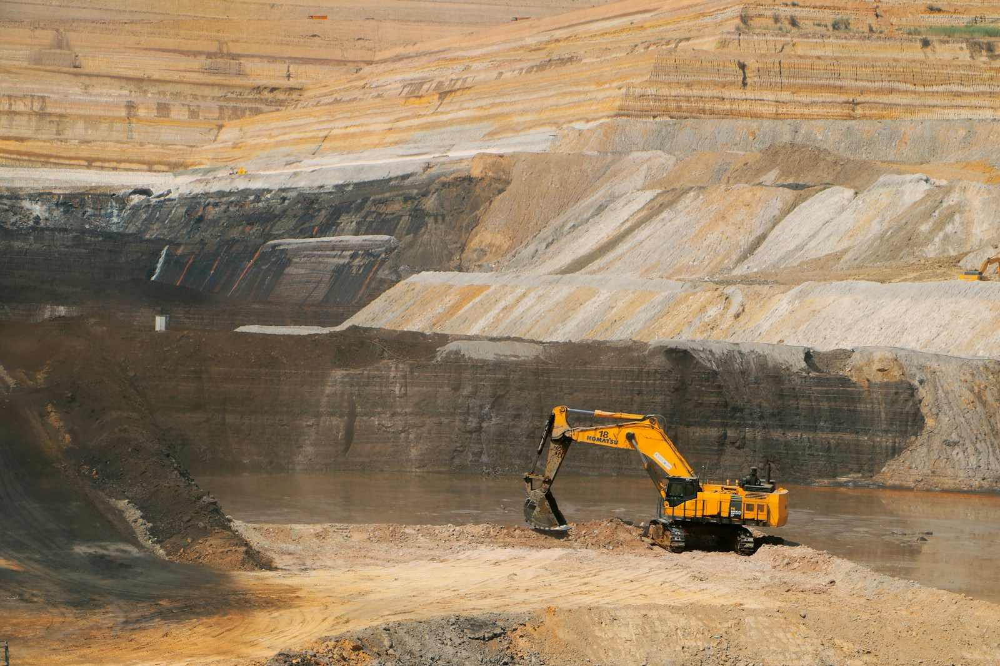
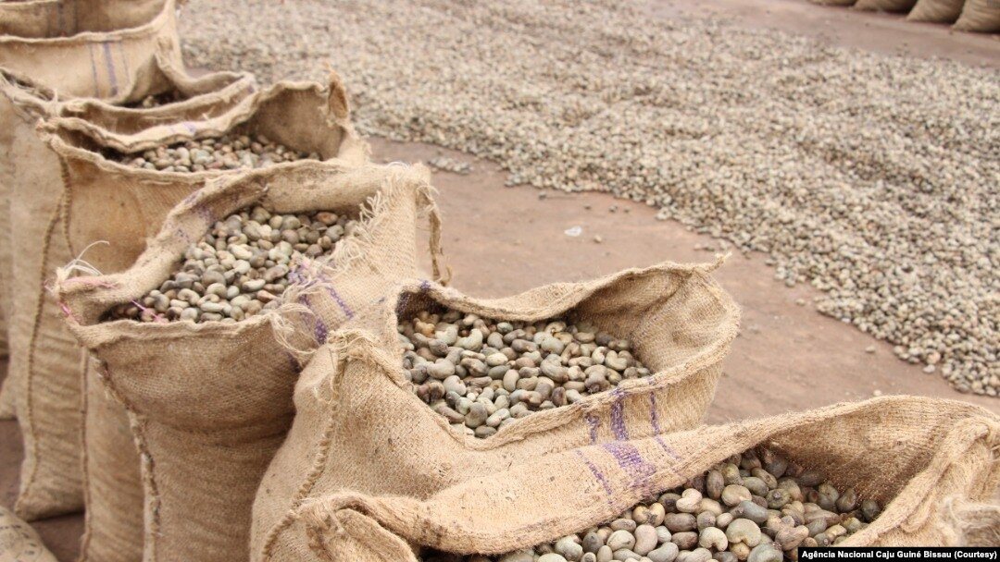

Crude oil & natural gas
Sourcing and supply conversations shaped around product, origin, destination, volume and commercial requirements.
Trade, Energy & Natural Resources
Independent sourcing, brokerage and commercial activities across petroleum, fish and seafood, minerals and specialty products.
Division overview
This division contains distinct business areas for oil, gas and petroleum; fisheries and seafood; mining and minerals; and selected agricultural or specialty products.
Each sector is evaluated on its own terms: mandate, geography, product specification, season or timing, commercial readiness, documentation, logistics and counterparty requirements. The structure keeps sector expertise clear while allowing Gigahash to coordinate related technology, cold-chain and market-access needs.

Core business
Oil, Gas & Petroleum
Gigahash evaluates qualified mandates involving crude oil, natural gas, bitumen and refined petroleum products. Our role is to develop credible sourcing and supply relationships, establish counterparty fit and coordinate a disciplined path toward diligence and execution.
Sourcing and supply conversations shaped around product, origin, destination, volume and commercial requirements.
Qualified aviation and automotive fuel opportunities, including Jet A-1, Automotive Gas Oil and Premium Motor Spirit.
Selected petroleum-derived and industrial product requirements evaluated against specification and market fit.
Initial qualification of authority, documentation, commercial structure, logistics and readiness for diligence.

Fisheries & Seafood
Gigahash can broker qualified fish and seafood opportunities through relationships in the Pacific Northwest, across the African continent and in wider international markets.
For the Columbia River system, our focus includes seasonal opportunities associated with spring and fall salmon runs, together with smoked salmon during off-season periods. Every opportunity remains subject to lawful harvest, seasonal availability, applicable tribal, federal and state requirements, origin documentation and supplier capability.
Across Africa and other markets, we evaluate a broader range of fish and seafood products according to species, form, volume, cold-chain requirements, export readiness and destination-market rules.
Additional commercial sectors
Mining and specialty-product opportunities are evaluated independently, with sector-specific documentation, logistics and counterparties.

Resources
Gold and other mineral prospects, project development, mineral sourcing, and strategic or energy-transition minerals.
Discuss a resource opportunity
Trade
Cashew, rare stones and selected products sourced from Sub-Saharan Africa and other qualified markets.
Submit a supply inquiry
How we engage
Credible trade and resource opportunities depend on verifiable mandates, capable counterparties and a clear understanding of responsibilities.